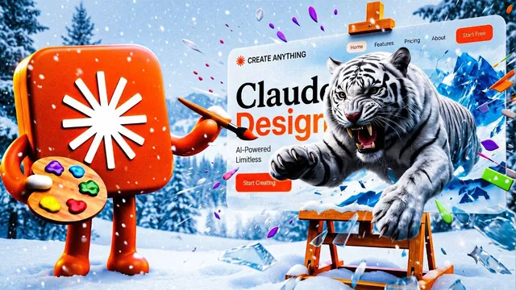

Claude 모션 디자인, 1,000만 원짜리 웹사이트를 혼자 만든다

원본 영상 보기 →
- 영상과 코드를 겹치는 게 차별점이에요
- 사이트의 사소한 화면이 브랜드를 말해 줘요
- 예쁜 프런트만으로는 사업이 안 돼요
한 줄 요약
Jack Roberts가 Claude 모션 디자인으로 영상과 코드 애니메이션을 겹친 웹사이트를 만드는 과정을 보여 줘요. 레퍼런스 찾기, Higgsfield로 이미지·영상 생성, Claude로 코드 모션 입히기, MongoDB로 백엔드 확장까지 한 흐름으로 정리했어요.
전체 내용 정리
영상 위에 코드 애니메이션을 겹치면 사이트가 달라져요
Jack은 영상 첫머리부터 완성된 예시 사이트를 연달아 보여 줘요. 핵심은 생성형 영상 애니메이션과 코드로 짠 모션 디자인을 한 화면에 겹치는 것이에요. 사이트에 '엑스레이' 모드를 켜면 어떤 부분이 영상이고 어떤 부분이 코드인지 구분돼 보여요.
예시가 꽤 다양해요. 스크롤을 따라 화면을 오르내리며 날아다니는 캐릭터, 스크롤하면 새들이 내려오는 화면, 모프(Morph) 메뉴, 홀로그램 스티커, 끌어올렸다 놓으면 떨어지는 커튼 푸터, 커서를 따라다니는 요소, 구독 버튼을 누르면 재생되는 애니메이션이 나와요. Jack은 모프 메뉴를 두고 순수한 코드 디자인이라고 강조하고, 이 전부가 Claude 디자인으로 만들어졌다고 말해요.
레퍼런스는 디자인 갤러리 사이트와 X에서 모아요
작업은 세 단계로 나뉘어요. 첫 단계는 마음에 드는 레퍼런스를 찾는 일이에요. 자막에 referral.design으로 표기된 디자인 갤러리 사이트에서 카테고리별로 둘러보면 Notion, Duolingo, ClickUp 같은 사이트 디자인을 볼 수 있다고 해요.
다른 하나는 Mobbin이에요. 입소문 난 앱과 사이트를 앱별·사이트별로 검색할 수 있거든요. X(구 트위터)에서 '디자인 웹사이트'로 검색해도 참고할 자료가 많이 나온다고 해요. 고른 레퍼런스는 Claude에 그대로 넣으면 돼요.
Higgsfield를 MCP로 연결해 이미지·영상을 만들어요
두 번째 단계는 이미지와 영상을 만드는 기능을 붙이는 거예요. Jack은 Claude를 Higgsfield(여러 이미지·영상 생성 모델을 한곳에 모아 둔 서비스)에 MCP로 연결해요. Higgsfield 페이지에서 MCP 메뉴로 내려가 Claude를 고르고 연결 버튼을 누르면 끝이에요.
그다음 Claude에 긴 프롬프트를 넣어요. 요지는 "첨부한 디자인 레퍼런스로 Claude 디자인에 관한 멋진 웹사이트를 만들어 줘. 아래 디자인 루프와 첨부한 스킬을 쓰고, 내 Higgsfield 연결로 영상 애니메이션과 관련 사진을 만들어 수준을 끌어올려 줘"예요. 모델은 Opus 5.5나 Sonnet 5.5를 쓴다고 해요. Jack은 이 프롬프트와 디자인 루프 전체를 설명란 링크의 가이드에 정리해 뒀다고 말해요.
404 페이지도, 가격표도 게임이 될 수 있어요
세 번째 단계는 결과물에 Claude 모션을 입히는 일이에요. 누르면 젤리처럼 말랑하게 움직이는 버튼, 404 페이지에서 직접 달리고 싸우는 게임, 명령어 바, 뒤집히는 배너, 걸어 다니는 위치 표시 캐릭터, 클릭할 때마다 이미지가 뜨는 이미지 트레일, 회전 갤러리, 낮과 밤 전환 바, '벤토 글라이드' 애니메이션이 이어서 나와요.
Jack이 404 페이지까지 신경 쓰는 이유는 단순해요. 무엇이든 하는 방식에 그 사람의 모든 게 드러난다고 보거든요. 그래서 가입하려면 게임을 이겨야 이메일을 넣을 수 있게 하거나, 문서(docs)나 가격을 보려면 과제를 끝내야 하는 구성도 가능하다고 보여 줘요.
앱 소개 화면과 홍보 이미지에도 그대로 써요
웹사이트만이 아니라 앱에도 적용돼요. Jack은 자신이 쓰는 음성 인식 스타트업 앱(자막 표기 '글라이더') 페이지를 보여 주는데, 여기 그래픽이 전부 Claude 모션 디자인이고 Opus 5.5로 디자인했다고 해요. 이 앱이 Claude, ChatGPT, Codex, Hermes 같은 앱 위에서 바로 켜진다는 점과 영상 요약 같은 기능을 시각적으로 풀어냈어요.
Higgsfield로 만든 브랜드 홍보 이미지 위에 모션 그래픽을 덧입힌 예시도 나와요. 프롬프트 한 줄로 앱 소개 영상을 만든 사례도 있는데, 오디오까지 들어 있다고 해요. Jack은 루프 애니메이션의 원리도 짚어요. 섹션마다 렌더 함수 하나를 쓰고, 마지막 프레임이 첫 프레임과 같아야 끊김 없는 영구 루프가 된다고 설명해요.
엑스레이로 보면 생성 에셋과 코드가 갈라져 보여요
완성 사이트를 하나 열어 엑스레이를 켜자 코드로 만든 회전 디스크, Higgsfield 에셋 8개, Higgsfield 영상 위로 움직이는 그래픽이 구분돼 보여요. 떨어지는 요소의 크기를 탭 한 번으로 조절하는 모션 디자인 광고 섹션, 드래그할 수 있는 인트로, '시도하기' 버튼으로 커뮤니티에 연결되는 흐름도 들어 있어요.
모바일 최적화도 돼 있다고 해요. 또 다른 사이트에선 불꽃 효과까지 코드로 만들었고 작은 필기체 효과도 코드로 짠 것 같다고 하며, 보라색·주황색 오버레이를 보여 주는 20초짜리 영상과 고객 후기 섹션도 있어요. Jack은 이 사이트가 한 번에 생성됐고 상단의 작은 그래픽 하나만 손봤다고 말해요.
데모로 디자인 에이전시 운영 시스템까지 만들었어요
멋진 사이트를 만든 다음 질문은 "이걸 실제 사업으로 키울 수 있느냐"예요. 고객 확보, 판매할 제품, 로그인 공간이 필요해지거든요. Jack은 '아틀리에' 시스템을 프롬프트 하나로 만들어 보여 줘요. 신규 작업과 디자인 작업을 '진행 중'에서 '배송 완료'로 옮기는 디자인 에이전시용 관리 화면이에요.
백엔드는 MongoDB로 붙여요 (스폰서 구간)
이 구간은 MongoDB가 스폰서예요. Jack은 '샘의 페인팅(Sam's Painting)'이라는 가상 사이트로 문제를 설명해요. 컴퓨터는 질문에 답하는 일과 저장된 내용을 기억하는 일을 동시에 해야 하는데, 둘은 서로 다른 속도로 늘어나서 용량이 모자랄 수 있다는 거예요.
MongoDB는 스프레드시트 형식이 아닌 문서(document) 단위로 데이터를 저장해요. 예약 하나가 문서 하나라서 고객마다 필드 구성이 달라도 되고, 수요일에 새 아이디어가 떠올라도 사이트를 다시 만들 필요 없이 필드를 더하면 돼요. 사이트가 쓰는 형태 그대로 들어가 변환 과정도 필요 없다고 해요. 막 출시된 MongoDB 9.0은 쿼리가 더 빠르고, 문 앞의 경호원처럼 트래픽 급증을 막아 부하가 큰 요청이 들어와도 다른 서비스가 멈추지 않는다고 소개해요.
연결은 Claude나 ChatGPT에서 더하기 버튼 → 커넥터 → 커넥터 관리로 들어가 MongoDB Atlas를 추가하고, 브라우저에서 '연결 계속'과 '승인'을 누르면 돼요. 사이트를 만들던 같은 대화창에서 진행하니 Claude가 맥락을 다 알고 작업한다고 해요. 새로 나온 Atlas Infinite는 답하기와 기억하기 작업마다 전용 컴퓨터를 붙여 각자 다른 속도로 확장되게 해 준대요. 하루 방문자 10만 명 같은 상황에 맞춰 유연하게 늘어나는 구조고, 확장 시간이 이전보다 96% 이상 줄었으며 레플리카 세트(replica set)는 52배 더 많은 데이터를 저장할 수 있다고 소개해요.
다섯 단계로 다시 정리하면
Jack은 마지막에 과정을 다시 묶어요. 레퍼런스를 찾고, Claude Opus 5.5나 Sonnet 5.5로 코드를 빌드하고, 이미지와 영상을 생성하고, Claude 모션을 입히고, MongoDB 같은 백엔드로 확장하는 순서예요. 다만 웹사이트 구축은 코딩으로 할 수 있는 일의 극히 일부라면서 다음 영상에서 15가지 핵심 활용처를 다루겠다고 예고하며 마무리해요.
핵심 인사이트
- 영상과 코드를 겹치는 게 차별점이에요: Jack은 영상 위에 모션 그래픽을 얹는 부분이 결과물을 차원이 다르게 만든다고 말해요. 영상 첫머리에서도 이 방식이 품질은 높이면서 비용은 줄여 준다고 강조하죠.
- 사이트의 사소한 화면이 브랜드를 말해 줘요: 404 페이지, 가격표, 가입 폼까지 인터랙션을 넣으면 사이트 전체가 훨씬 재미있고 인터랙티브해져요. Jack은 무엇이든 하는 방식에 그 사람의 모든 게 드러난다고 봐요.
- 예쁜 프런트만으로는 사업이 안 돼요: 고객 계정, 예약, 판매 데이터를 담을 백엔드가 있어야 사이트가 사업으로 이어져요. 처음부터 필드를 자유롭게 늘릴 수 있는 문서형 DB를 붙여 두면 나중에 사이트를 다시 만들 일이 줄어요.
오늘 당장 해볼 것
- Mobbin이나 X에서 '디자인 웹사이트'로 검색해 마음에 드는 사이트 2~3곳을 골라 보세요. Jack의 첫 단계도 이렇게 고른 레퍼런스를 Claude에 그대로 넣는 거예요.
- 지금 운영 중인 사이트의 404 페이지나 문의 버튼 하나만 골라 Claude에 "누르면 젤리처럼 반응하는 버튼으로 바꿔 줘"처럼 요청해 보세요. 사이트 전체를 갈아엎지 않고도 인터랙션 효과를 바로 확인할 수 있어요.
- 예약·문의를 받는 사이트라면 Claude 커넥터에서 MongoDB Atlas를 연결해 문의 내용을 저장하는 구조를 시험해 보세요. 고객마다 받는 정보가 달라도 표를 다시 설계할 필요가 없거든요.